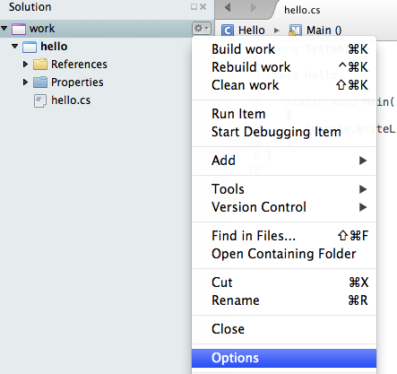
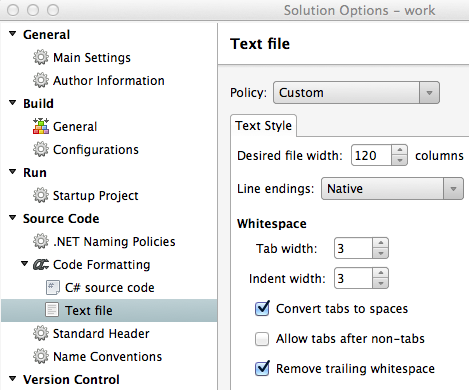

C# Program Structure#
We discuss the most basic syntax satisfied by all C# programs, which are plain text files,
with names ending in .cs. There will be additions
later, but any program you can run will include:
using System;class ClassName{static void Main(){}}By convention class names are capitalized.
You can see that both the example program LoyolaChicagoBooks/introcs-csharp-examples and the lab program LoyolaChicagoBooks/introcs-csharp-examples follow this pattern. The discussion of these parts through line 6 in A Sample C# Program are about all we have to say at this point. For now this is the boilerplate code. We will make additions as necessary. We choose not to clutter up the basic setup with features that we are not about to use and discuss.
Here is a silly little test illustrating the difference between Console.WriteLine
and Console.Write, in example LoyolaChicagoBooks/introcs-csharp-examples:
using System;
class WriteTest
{
static void Main()
{
string s = "hello";
Console.Write(s);
Console.Write("there");
Console.WriteLine(s);
Console.WriteLine( "Another line");
Console.Write("Starting ");
Console.WriteLine("yet another line");
}
}
When run, the program prints:
hellotherehello
Another line
Starting yet another line
Do you see how the output shows the differences between WriteLine and Write?
If we added another printing statement, where would the beginning of
the output appear:
after the final e or under the S of Starting?
Indentation Help#
Using conventional indentation helps understand a program and find errors,
like unmatched braces. When you press return in a C# source file
(i.e. a file with name ending in .cs), Xamarin Studio makes a guess at the proper
indentation of the next line. The exact reaction can be set in the options.
The simplest approach is to set these options once for all new files
in a solution, like your work solution:
Access the context menu for the whole solution (not one project).
Select Options.

In the popup Solution Options Window, you will see “Code Formatting” in the left column. If you do not see “C# source code” and then “Text file” right underneath it click on “Code Formatting” to expand the hierarchy.

Click on C# source code, and then the right side should show options. Adjust them to look like the picture: tab and indent widths 3, first and last check boxes checked (Convert tabs to spaces. Remove trailing spaces), and have the middle check box (Allow tabs after non-tabs) unchecked.
Click OK in the bottom right corner.
{kind=link}
{kind=link}
Tabs vs. spaces is not a significant issue inside a consistent environment, like Xamarin Studio, but if there are tab characters in a file, they can be expanded different amounts by different display programs. Then particularly if you mix tab characters and spaces you can get something very strange. If only spaces are used, there is no ambiguity in different displays.
The 3 vs. 4 spaces is not a big deal, but 3 appears to be large enough to see easily, and makes lines with nested indentation have more room.
Compiler Error Help#
There are an enormous number of possible syntactic errors in your source code that the compiler can detect.
Errors shown while editing: If you use an editor like Xamarin Studio, some of these errors are even checked while you type and are noted while you are editing. They may be indicated with a red squiggly underline, and possibly a red comment at the right. Sometimes the squiggle is just because you are in the middle of something, but if it is still there after you complete a whole statement, there may well be an issue to look at. Sometimes fixing the issue makes the annotation go away, but sometimes your program may really be fixed, even though the error annotation does not go away until you formally compile/build the whole program. This annoying ambiguity leads some people to turn off error annotations, and just let the system note errors after a complete compile cycle.
After compiling and getting an error, sometimes reading the error description carefully will help you understand the problem. Sometimes the error is very cryptic. In those cases it might help to look at the C# .NET error documentation,
Each compiler error you make has a number shown in its description. Many of these error numbers are shown in the left column of the linked page. You can click to get a more complete explanation and examples.
Another important way to learn about the error messages is to leverage your experience: After you have eventually found how to fix your error, allow the extra time to use your new knowledge, look back at the original error message, and see if the error description text makes more sense now. That should help next time, (and there usually is a next time). Even when the error description still makes no particular sense, you may well get into the same situation again, with the same error number. Then remembering the issue you found in a previous time could help.
Debugging can eat up an enormous amount of time, so it is really worth your effort to understand the errors that you tend to make and the errors’ relation to the error messages that you get.
Warning
It is certainly helpful that the compiler finds syntactic errors for you, but be sure to remember that compiling does not mean the program will “work” and correctly do what you desire. Test your compiled program thoroughly to reduce the chance of logical errors remaining, that cause run-time errors, or just the wrong results.
Sequential Execution#
A function like Main involves a sequence of statements to execute.
The basic order of execution is sequential:
first statement, then second, ….
This is the same as the textual order, so it is easy to follow. Later in
Defining Functions of your Own, Decisions, and While Loops,
we will see more complicated
execution orders that do not match textual order.
Whatever the order of execution given by the program, it is important to
always keep track of the current state of the program,
one statement at a time: what statement was just executed,
what are the values of variables after that statement’s execution,
and what will be executed next.
For now consider a small, artificial example program, LoyolaChicagoBooks/introcs-csharp-examples, emphasizing the ability to reassign variable values.
1using System;
2
3class UpdateVars
4{
5 static void Main()
6 { // simple sequential code updating two variables
7 int x = 3;
8 int y = x + 2;
9 y = 2 * y;
10 x = y - x;
11 Console.WriteLine (x + " " + y);
12 }
13}
Can you predict the result? Run the program and check. Particularly if you did not guess right, it is important to understand what happens, one step at a time. That means keeping track of what changes to variables are made by each statement.
In the table below, statements are referred to by the numbers labeling the lines in the code above. We can track the state of each variable after each line is executed. A dash is shown where a variable is not yet defined. For instance after line 7 is executed, a value is given to x, but y is still undefined. Then y gets a value in line 8. The comment space can be used any time it is helpful. In particular it should be used when something is printed, since this important action does not affect the variable list.
Line |
x |
y |
Comment |
|---|---|---|---|
5 |
- |
- |
Start at beginning of Main |
7 |
3 |
- |
initialize x |
8 |
3 |
5 |
5=3+2, using the value of x from the previous line |
9 |
3 |
10 |
10=2*5 on the right; use the value of y from the previous line |
10 |
7 |
10 |
7=10-3 on the right; use the value of x and y from the previous line |
11 |
7 |
10 |
print: 7 10 |
The critical point here is to always use the most recently assigned value of each variable. Unlike in math, symbol values change!
The order of execution will always be the order of the lines in our table. In this simple sequential code, that also follows the textual order of the program.
Following each line of execution of a program in the proper order of execution, carefully, keeping track of the current values of variables, will be called playing computer. A table like the one above is an organized way to keep track.
The line numbering is not very exciting in a simple sequential program, but it will become very important when we get to other execution sequences. We start with the simple sequential numbering now for consistency, as we get used to the idea of such a table following execution sequence.
Play Computer Exercise#
Here is a similar program, LoyolaChicagoBooks/introcs-csharp-examples:
1using System;
2
3class UpdateVars2
4{
5 static void Main()
6 { // for first Playing Computer Exercise
7 int a = 5;
8 int b = 2 * a;
9 a = a * b;
10 b = a - b;
11 a = a + b;
12 Console.WriteLine (a + ":" + b);
13 }
14}
Play computer, completing the table
Line |
a |
b |
Comment |
|---|---|---|---|
5 |
- |
- |
Start at beginning of Main |
7 |
5 |
- |
initialize a |
8 |
|||
9 |
|||
10 |
|||
11 |
|||
12 |
Another Play Computer Exercise#
A silly one on the same line: LoyolaChicagoBooks/introcs-csharp-examples:
1using System;
2
3class UpdateVars3
4{
5 static void Main()
6 { // another sequentail Playing Computer Exercise
7 string s = "a";
8 string t = s + "n";
9 s = t + s;
10 t = "b" + t;
11 s = t + s;
12 Console.WriteLine (s + " " + t);
13 }
14}
Play computer, completing the table
Line |
s |
t |
Comment |
|---|---|---|---|
5 |
- |
- |
Start at beginning of Main |
7 |
|||
8 |
|||
9 |
|||
10 |
|||
11 |
|||
12 |